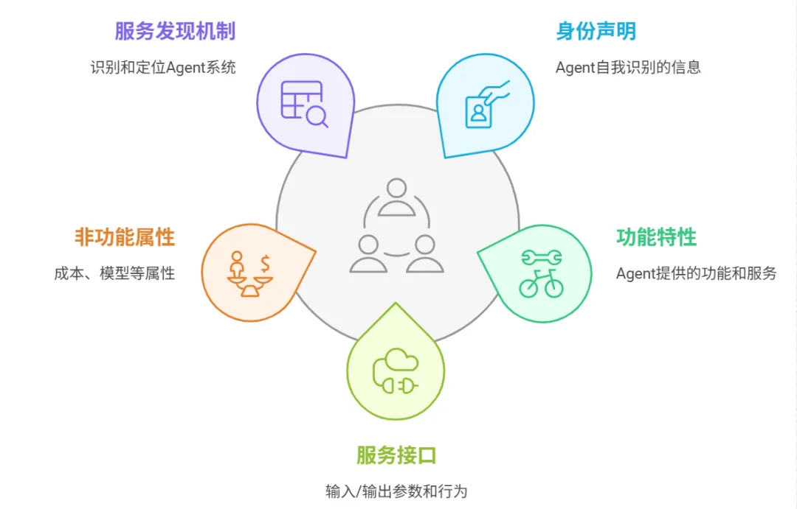
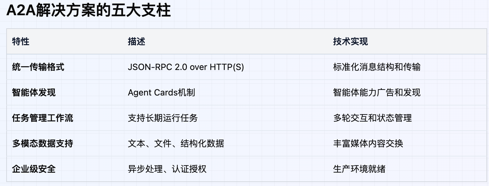
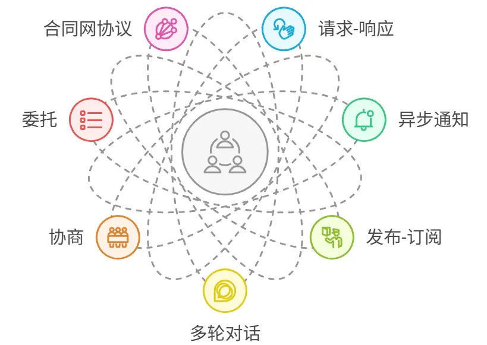
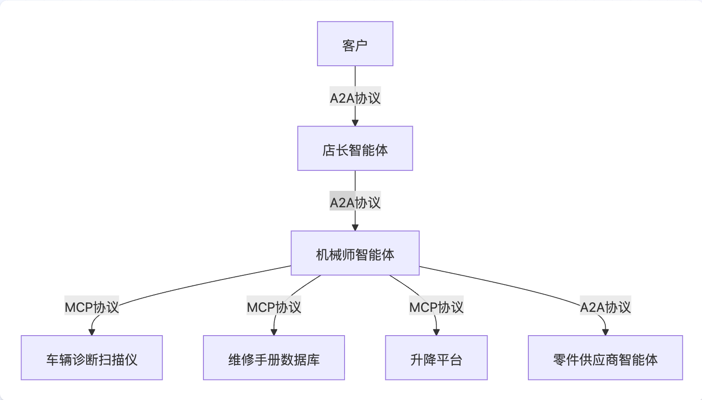
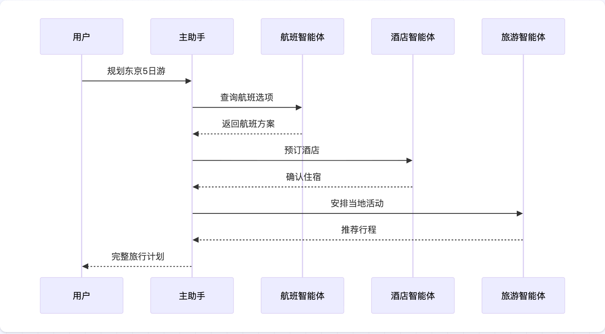

基本概念
知识（Memory）
- 知识库
- 数据仓库
技能（Tools）
类比于人，人可以使用各种工具和技能，那么Agent也是如此。
- 人：能够”做饭“，使用电脑完成工作
- Agent：Agent也可以使用技能，技能分为四种：插件、工作流、MCP、Skills。
LangChain
RAG
MCP
模型上下文协议，模型与外部工具的接口，帮助Agent扩展使用外部工具的能力。 mcp server demo mcp client demo
核心概念
- 资源（Resource）：数据资源、API、文件内容等
- 工具（Tools）：可以被LLM调用的工具
- 提示词(Prompts)：帮助用户完成指定任务的预定义模板
Skills
介绍
Skills是一种基于文件系统的可复用资源，用于提供给Agent专业的领域知识。包括：工作流、最佳实践等。
A2A


基本通信元素
- Agent Card 智能体名片
- Task 任务
- Message 消息
- Part 内容部分
- Artifact 工件
通信方式

- 请求-响应
- 流式传输
- 发布-订阅
- 异步事件通知
A2A vs MCP
- MAP专注工具链接
- A2A专注智能体链接
智能体发现机制
- 标准URI发现
- 策划注册表（类似于微服务的服务注册）
- 直接配置/私有发现（P2P）
安全相关
- 认证：OAuth 2.0 API密钥
- 授权：JWT令牌、权限矩阵
- 传输：TLS 1.2+，证书验证
- 网络隔离：VPC，IP白名单
应用场景
单Agent

多Agent

企业客服协作：
- 一线客服智能体：处理常见问题
- 专业技术智能体：解决技术难题
- 账单处理智能体：处理财务相关问题
- 升级管理智能体：处理投诉和特殊情况
参考内容
- https://mp.weixin.qq.com/s/36oE36DQXXscnkBrZQhv6g
- https://a2aprotocol.ai/blog/2025-full-guide-a2a-protocol-zh
- https://modelcontextprotocol.io/docs/getting-started/intro#why-does-mcp-matter
- Skills vs MCP
- LangClain